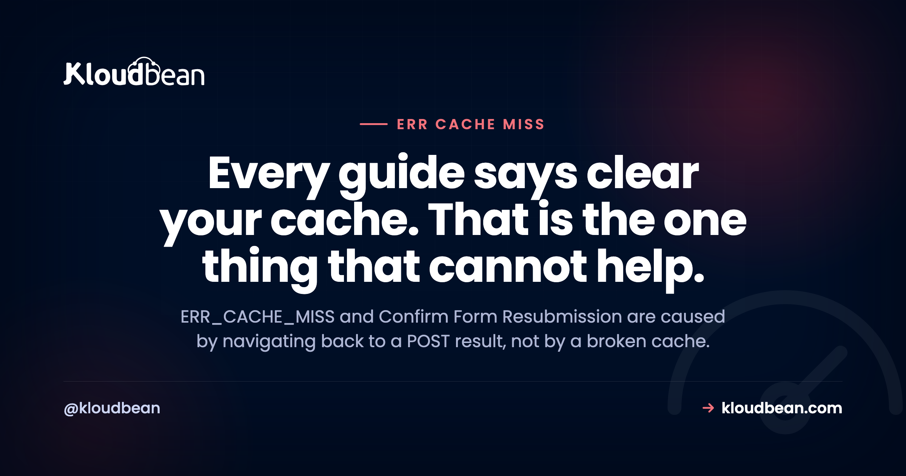

ERR_CACHE_MISS Is Not a Cache Problem: It Is Your Form

ERR_CACHE_MISS almost always appears with "Confirm Form Resubmission", and the two together tell a much more specific story than the wording suggests. You submitted a form, the browser sent a POST, the server returned a page in response, and then you pressed back or refreshed. That page was the result of a POST, so the only way for the browser to show it again is to send the POST again, which could place a second order or send a second message. Chrome refuses to guess and asks. The cache is not broken. The browser is being careful with a request it cannot safely replay.
As a visitor, do not press back or refresh on a page you reached by submitting a form. Navigate to it through a link instead. As a developer, this is your fix to make: respond to a successful POST with a 303 redirect to a normal GET URL, which is the POST-redirect-GET pattern. Then the back button lands on a cacheable GET page and the prompt disappears permanently. Also check that you are not sending Cache-Control: no-store where no-cache is what you meant.
Why the usual advice does nothing
Search this error and you will be told to clear your cache, disable extensions, reset your network, and update Chrome. Consider what the error actually is: the browser needs a page it does not have stored, and the only way to regenerate it is to repeat a POST. Clearing the cache removes more stored pages, so if anything it makes the situation marginally more likely, not less.
There is one exception worth naming because it is embarrassingly common among developers. If DevTools is open with "Disable cache" checked, Chrome stores nothing at all, so every back navigation to a POST result produces this. If you only see it while working with DevTools open, that checkbox is your answer.
The real fix: POST-redirect-GET
This is one of those patterns that solves a whole category of problems at once, and it is genuinely worth applying everywhere you handle a form.
The problem shape: a POST arrives, you process it, and you render the result page directly in the POST response. Now that URL is permanently tied to a POST. Back button, refresh, bookmark, and share all break in different ways.
The fix: process the POST, then redirect to a URL that serves the result over GET.
// Express: process, then redirect with 303
app.post('/orders', async (req, res) => {
const order = await createOrder(req.body);
res.redirect(303, `/orders/${order.id}`);
});
// The result page is an ordinary GET
app.get('/orders/:id', async (req, res) => {
const order = await getOrder(req.params.id);
res.render('order', { order });
});// PHP
$id = create_order($_POST);
header('Location: /orders/' . $id, true, 303);
exit;Use 303 specifically rather than 302. A 303 tells the client to make the follow-up request with GET regardless of the original method, which is exactly the intent. A 302 leaves that to client discretion and historically has been handled inconsistently. One digit, and it is the digit that makes the pattern reliable.
What you get for that small change. The back button works, because it returns to a GET page. Refresh works, and re-fetches rather than re-submitting. The URL is shareable and bookmarkable. Double submissions from an impatient refresh stop happening. And "Confirm Form Resubmission" disappears from your application permanently.
My honest view: if you handle forms and render results in the same response, this is the highest-value hour of refactoring available to you. It is not really a fix for a browser error, it is the correct shape for a form, and the browser error is just what you get for not using it.
The second cause: no-store where you meant no-cache
These two directives get used interchangeably and they are meaningfully different. Getting it wrong is a common source of this error on pages that have nothing to do with forms.
| Directive | What it does | Back button |
|---|---|---|
no-store | Do not store this response anywhere at all | Breaks, nothing to return to |
no-cache | Store it, but revalidate before reuse | Works, revalidated on return |
private, max-age=0, must-revalidate | Store in the browser only, always revalidate | Works, and stays private |
People reach for no-store on authenticated pages, reasoning that private data should not be cached. The intent is right and the directive is usually stronger than needed. no-store means the browser keeps nothing, so back navigation has nothing to show. What most authenticated pages actually want is caching in the browser only, with revalidation on every use:
# Reasonable for a logged-in page
Cache-Control: private, no-cache, must-revalidateReserve no-store for genuinely sensitive responses where a copy on disk is unacceptable, such as a page displaying full payment details. For an ordinary account dashboard it is heavier than the situation requires, and it costs you working navigation. Check what you are actually sending:
curl -sI https://example.com/account | grep -i cache-controlOn WordPress, a caching plugin or a security plugin may be adding no-store to logged-in pages on your behalf, so check the response rather than only your own code.
What to tell a visitor who reports it
Short and specific. Do not press back or refresh after submitting a form; navigate using the site's own links instead. If they are stuck on the prompt, the page they want almost always exists at its own address, so a fresh navigation reaches it cleanly.
The longer answer is that they should not have to know this. If your users are hitting Confirm Form Resubmission regularly, it is a design signal rather than a support issue, and the redirect pattern above removes it for everyone at once.
| When it happens | Cause | Fix |
|---|---|---|
| Back or refresh after submitting a form | Page is a POST result | POST-redirect-GET with 303 |
| Only with DevTools open | "Disable cache" is checked | Uncheck it |
| On logged-in pages, no forms involved | no-store in Cache-Control | Use private, no-cache, must-revalidate |
| After installing a caching or security plugin | Plugin adding no-store | Check the response headers |
| On one browser only | Extension interfering with storage | Test in a private window |
| On a payment or checkout step | Intentional no-store | Leave it, and use the redirect pattern |
The wider point about POST
Worth stepping back, because this error is a symptom of a design decision rather than a browser quirk. POST is defined as non-idempotent: sending it twice may have a different effect from sending it once. Everything the browser does here follows from taking that seriously. It will not silently replay a POST, it will not restore a POST result from history, and it will ask before doing either.
So the useful mental rule is that a URL a user might return to should be reachable with GET. If returning to a page requires repeating a side effect, the design is asking the browser to do something it correctly refuses to do. Once you see the error that way, the fix is obvious and the browser stops looking awkward.
What changes once this is in production
This one is mostly yours, and it should be. It is an application design question and a response header question, and no hosting change makes a POST replayable.
Two smaller things do touch it. Response headers are set by your application or by a plugin, and having staging means you can change caching directives and click through real navigation before your users do, which is where header changes usually go wrong. And when a caching plugin turns out to be adding no-store, automatic backups make rolling back a decision rather than a repair.
Beyond that, the fix is a 303 in your route handler. That is a good outcome: a browser error that turns out to be a small, permanent improvement to your own code.

Further notes on ERR_CACHE_MISS Is Not a Cache Problem
For the connection-level browser errors that genuinely are transport problems, ERR_CONNECTION_RESET. On caching more broadly, clearing WordPress cache, CDN explained, and Redis caching patterns. On response headers, the security headers guide. For request-level failures, 400 Bad Request and fixing CORS errors. And for safe change management, staging environments.
Ship the app, not the infrastructure.
Pick from seven clouds, run your app on a managed server you control, and keep databases, storage, and deploys in the same dashboard instead of four separate vendors.
- ✓ Seven cloud providers
- ✓ Managed databases
- ✓ Object storage
- ✓ Automatic backups
- ✓ Free SSL
- ✓ Git deploy
- ✓ Free migration assistance
FAQ
What does ERR_CACHE_MISS mean?
It means the browser needs a page that is not in its cache, and the only way to produce it again would be to repeat a POST request. Since repeating a POST could duplicate an order or a message, Chrome asks for confirmation instead of guessing. It is a safety behaviour rather than a fault, and it usually appears alongside "Confirm Form Resubmission".
Why does clearing the cache not fix ERR_CACHE_MISS?
Because the error is caused by a page being absent from the cache in the first place. Clearing the cache removes more stored pages, so it cannot help and may make the situation slightly more likely. The real fix is on the application side: respond to a POST with a redirect so the result page is served over GET.
What is the POST-redirect-GET pattern?
After processing a form submission, instead of rendering the result directly in the POST response, you return a 303 redirect to a URL that serves the result over GET. The browser then follows that redirect and lands on an ordinary page. Back, refresh, bookmark, and share all work, and the resubmission prompt disappears.
Why use a 303 redirect rather than 302?
A 303 explicitly tells the client to make the follow-up request with GET, regardless of the original method, which is exactly what you want after a POST. A 302 leaves that to client discretion and has historically been handled inconsistently. Using 303 makes the pattern reliable.
What is the difference between no-store and no-cache?
no-store tells the browser not to keep the response at all, so back navigation has nothing to return to. no-cache allows storage but requires revalidation before reuse, so navigation still works. For most authenticated pages, private, no-cache, must-revalidate is the right choice, with no-store reserved for genuinely sensitive responses.
Why do I only see this error when DevTools is open?
Because the "Disable cache" option in the Network panel is checked, so Chrome stores nothing while DevTools is open. Every back navigation to a POST result then produces this error. Uncheck it, or expect the behaviour while it is on. This catches out a lot of developers debugging their own forms.
Can a WordPress plugin cause ERR_CACHE_MISS?
Yes. Caching and security plugins sometimes add Cache-Control: no-store to logged-in pages, which breaks back navigation even where no form is involved. Check the actual response headers with curl -sI rather than assuming your own code is the only thing setting them.
How should I tell users to work around it?
Ask them not to press back or refresh after submitting a form, and to navigate using the site's links instead. That works, though it is worth treating repeated reports as a design signal: implementing the redirect pattern removes the problem for everyone rather than teaching each user to avoid it.